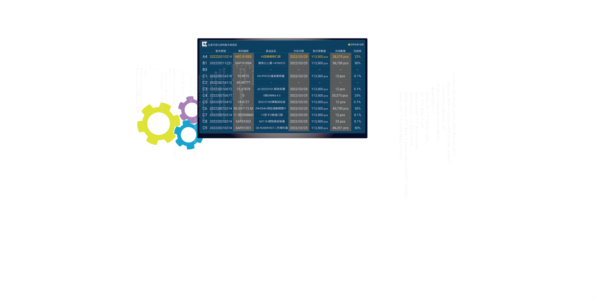
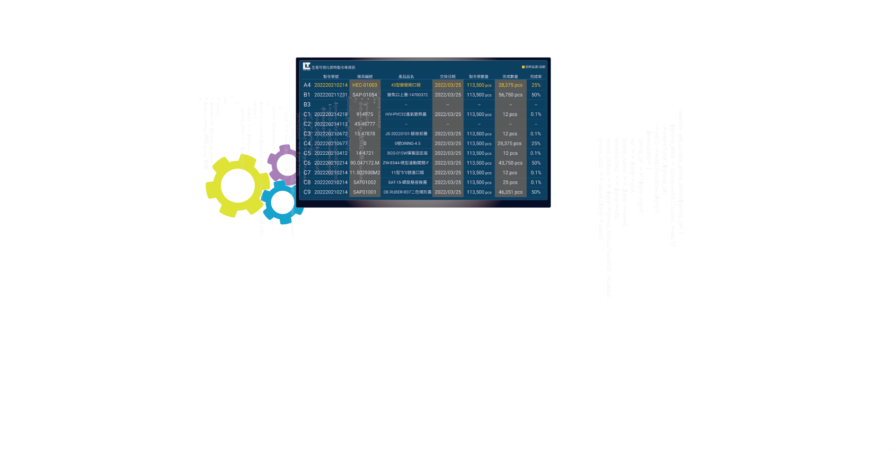
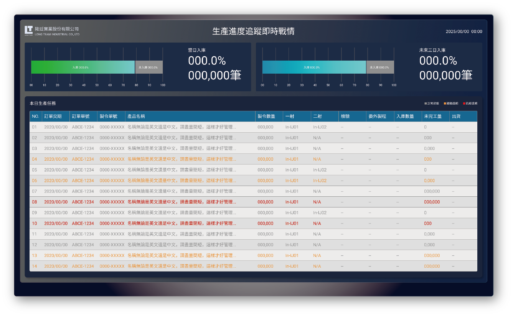

塑膠射出 VS 產線即時戰情
一間正在運作的工廠，管理者最需要看到什麼資訊?
我們整合射出現場所需管控戰情，並將資訊分類成四大類 (ㄧ)機台即時狀態、(二)機台稼動累積時間、(三)當日重要的任務排程與期限、(四)入庫與出貨資訊
團隊夥伴
我們擁有一位出色的產品經理、一位才華洋溢的UI UX設計師、一位腦筋靈活的前端工程師和一位邏輯縝密的後端工程師。
身為UI UX我負責使用者訪談研究、使用流程設計、介面設計、操作測試與回饋。


 


一間正在運作的工廠，管理者最需要看到什麼資訊?
我們整合射出現場所需管控戰情，並將資訊分類成四大類 (ㄧ)機台即時狀態、(二)機台稼動累積時間、(三)當日重要的任務排程與期限、(四)入庫與出貨資訊
我們擁有一位出色的產品經理、一位才華洋溢的UI UX設計師、一位腦筋靈活的前端工程師和一位邏輯縝密的後端工程師。
身為UI UX我負責使用者訪談研究、使用流程設計、介面設計、操作測試與回饋。
我們與射出廠合作2~3年，詳細的跟生產管理部門與現場射出工程師密切訪談，將需求與資訊分為各機台資訊、訂單資訊、稼動狀態、和機台監控時間等。

01.盲目的生產，造成重工 02.無法即時了解目前產量 03.無控管訂單與交期
01.機台資訊無分類 02.無法計算機台實際產能時間 03.無法了解機台於各區間狀態 04.哪些機台閒置?哪些過量?
01.生管無法即時掌握各產線狀況 02.無法即時了解產線訂單生產情況 03.由於產線無透明資訊，無效溝通 04.無法掌握不良率，不能即時止損
此為我們針對該射出廠需求，所提供即時可視化資訊架構!

1.各產線分區呈現
-根據位置平面圖建立機台模型，能即時對照
-各機即時狀態
-各機台正在進行單據、完成率、良率
2.個顏色意義
-綠色為正常量產
-藍色為正在試模
-黃色為突發狀況可解決
-紅色為緊急狀況，需要人為介入處理
-灰色未啟動機台
3.生產資訊透明
-能夠了解每筆製令單的狀況
-良率過低能即時止損
-不再盲目生產，減少損失
-能夠即時了解機台狀況不再空轉
01.依據製令單、生產計劃排程表 02.掌握當日出貨任務 03.也能掌握拆單出貨進度
01.了解近兩個月出貨進度 02.根據數據能調整產線狀況 03.系統也會通知將過期、已過期單據
01.根據數據能掌握60天內的出貨狀況 02.管理者能初步管理損失與風險 03.能根據出貨趨勢調整生產方針
提供機台稼動率、緊急製令單據和全廠OEE等資訊，另用色彩來反應機台與單據狀況，綠色為量產、藍色為試模、黃色為小狀況或即將過期、紅色為緊急狀況或已經過期單據。
機台各狀況與累積時數 1.將機台各狀況運作時數進行統計 2.管理者能掌握整廠當日所有機台各狀態累積機台數、時數等 3.能夠即時調整產線與調配
本日生產任務 4.會顯示較急或將過期的製令單 5.讓管理者了解那些生產狀況需要緊急處理
設備異常事件 7.彙整所有機台狀況並顯示 8.可根據狀況種類判斷是否介入
當日全廠設備綜合效率（OEE） 9.了解整廠生產效率，並調整生產方針 10.初步了解整廠異常狀況，例如:換線、人員不足、機械故障等
本日生產任務，掌握當日進度，會優先顯日較為緊急的製令單據，讓生管人員可以優先處理。
顯示當日入庫率與近三天入庫率，讓產線能掌握完成目標與近幾日入庫狀況。
由於射出廠為輪班24小時制，晚班大多是作業人員而非射出工程師與管理人員，往往機台在半夜有突發狀況時無法了解實際的時間與原因，因此才需要有24小時狀況圖才能與稼動率比對。
1.當日機台稼動率累積時數
-綠色-正常量產
-藍色-試模狀態
-黃色-能夠處理的小狀況
-灰色-機台無運作
-紅色-緊急狀況
2.緊急狀況原因統計
-統計各機台回報停機的原因
-根據原因進行檢討與改善
3.當日機台各狀態時數統計
-可以明確比對各機台稼動狀態
-即時掌握總體任務狀況並調整方針
過去在未有即時可視化時，整場產線的狀況與管理確實像瞎子摸象，無法精算機台產能、電費花得莫名其妙卻沒效能、人力無法即時調配等問題相當困擾。後來雙肩架上可視化系統後，讓資訊變得更透明與即時，例如該機台臨時有狀況無法排除，原本 此產線上的作業人員可以即時調配到其他機台，減少人員閒置的問題、可以即時知道哪台機台有狀況、能計算當天機台的稼動狀態、能夠利用製令單即時化判斷是否管控庫存，品檢何時進場與調控物料等。
目前我們還在與機台廠商優化回傳訊號的精確度，達到全面自動監控機台狀態，排除人為因素讓資訊更加客觀與精確!